Live From GitHub
AI Engineer · Digital Twin · IoT · Embedded Systems
I design intelligent engineering systems that combine machine learning, digital twins, and control theory with embedded hardware and modern web platforms. My work centers on predictive modeling, closed-loop control, and automation — from LSTM-driven thermal forecasting and model predictive control to sensor-integrated IoT systems and full-stack applications.
About
I'm a B.Tech ECE student at Kalasalingam Academy of Research and Education, specializing in Signal Processing and Communication Systems, with a growing focus on AI engineering and digital twin design.
My work pairs machine learning with control theory: building digital twins that model physical processes, forecasting system behavior with models like LSTMs, and closing the loop with predictive controllers such as Model Predictive Control (MPC) and Kalman filtering. I extend this into embedded systems and IoT (ESP32, Arduino, LoRa) and into automation tooling that reduces repetitive engineering work.
Python and PyTorch anchor my AI work; MATLAB and Simulink support systems-level simulation and DSP for FPGA. I pair this with Next.js, TypeScript, and Supabase to ship usable interfaces and APIs. These are research-grade prototypes and coursework-driven builds, each engineered end-to-end — from sensing and estimation through control and interface.
Education
Technical Stack
Experience
Portfolio
Problem: reactive data-center cooling either lets rack temperatures spike before responding, or overcools continuously to guarantee safety, wasting energy either way. Architecture: a physics-based digital twin — synthetic CPU/GPU workload generation feeding a thermal model with rack-level dynamics and heat recirculation — paired with a closed-loop controller, plus a carbon-aware optimization module that factors grid carbon intensity into cooling decisions. Algorithms: a bidirectional LSTM forecasts short-horizon rack temperatures, Monte Carlo Dropout quantifies per-step prediction uncertainty, and an uncertainty-aware predictive controller (MPC-style, not a formal QP/convex solver) uses that uncertainty to size its safety margin. Verified outcome: evaluated over a 48-hour window across 40 racks against static and reactive baseline controllers, the predictive controller achieved the lowest peak temperature (22.84°C) with zero safety violations across all three controllers — demonstrating the safety-efficiency trade-off of conservative predictive control. Carbon-emission reduction is implemented as a module but is not yet a validated experimental result. Exposed via a FastAPI REST interface and containerized with Docker.
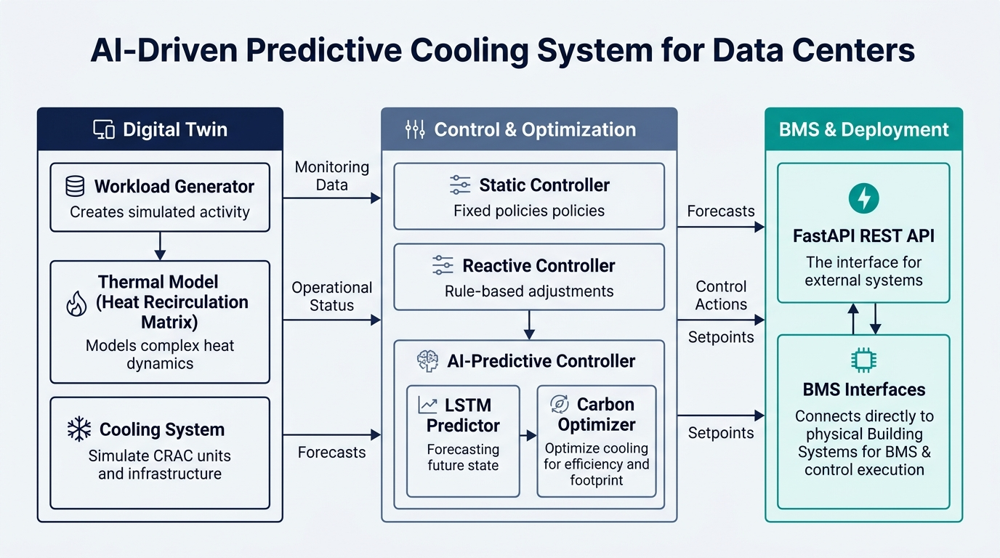
System Architecture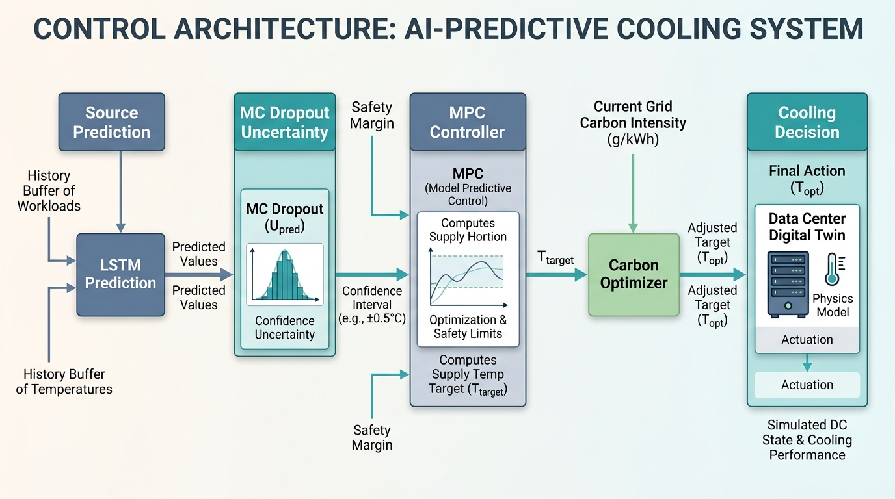
Control Architecture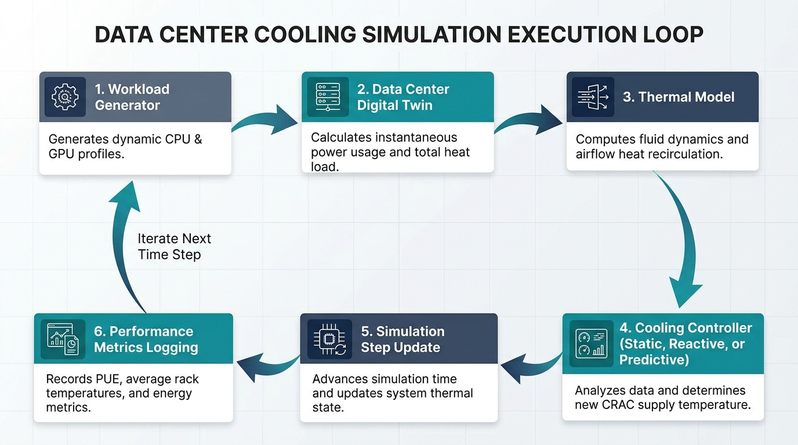
System Workflow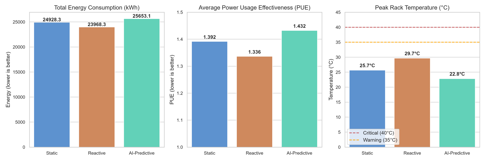
Controller Comparison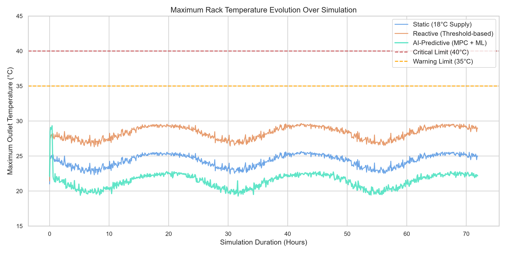
Temperature & Safety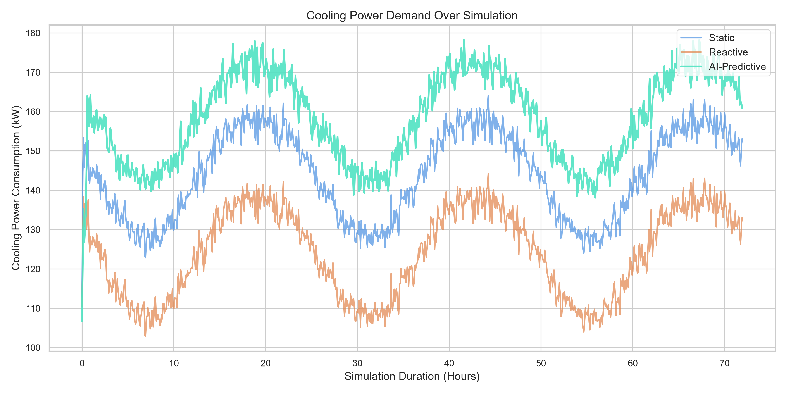
Cooling PowerOverview: a smart irrigation digital twin that models soil moisture, environmental conditions, evapotranspiration, and plant stress to evaluate event-based irrigation control against a naive threshold baseline. Architecture: sensor/environment inputs flow through Kalman state estimation into the digital twin, which drives an evapotranspiration / plant-stress model and an event-triggered irrigation controller, integrated with ThingSpeak for IoT telemetry and command exchange. Algorithms: scalar Kalman filtering for soil-moisture state estimation, Hargreaves-Samani evapotranspiration (FAO-56), a normalized plant-stress index with recovery logic, bucket-model soil-moisture dynamics, and event-triggered irrigation control, cross-checked in a closed-loop Simulink model. Verified results: the MATLAB reference simulation recorded a 20.00% water saving over the baseline controller (4.8000 vs. 3.8400 units, 40 vs. 32 irrigation events), while an independent Python mathematical validation of the same equations — run under a different stochastic noise sequence, since MATLAB/Simulink could not be executed on the current validation machine — recorded a 17.50% saving (4.8000 vs. 3.9600 units, 40 vs. 33 events). Both runs recorded 0/100 high-stress days. Physical hardware deployment is simulated (Wokwi) with a live ThingSpeak dashboard; field-deployed hardware testing is not yet verified.
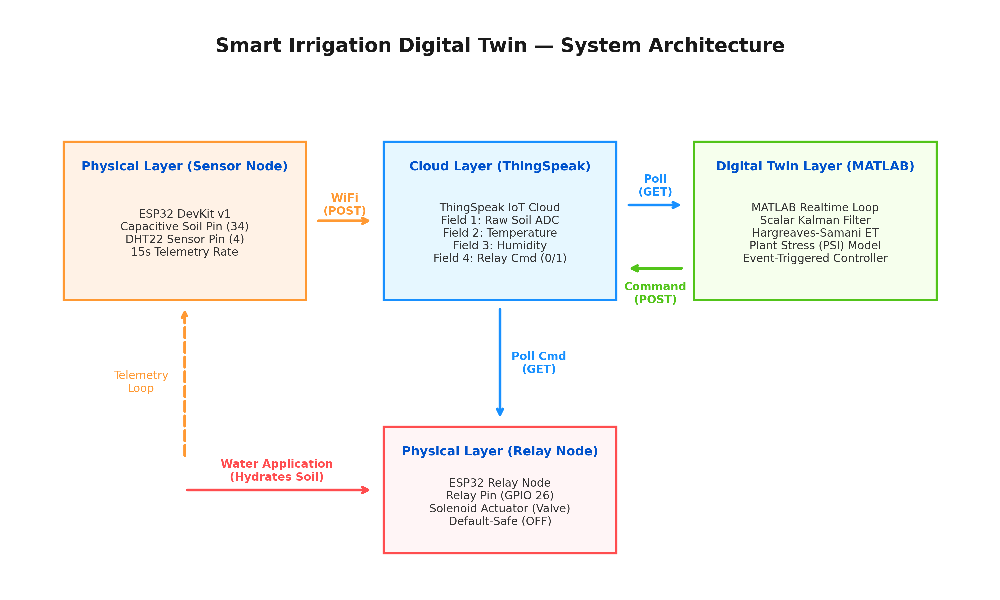
System Architecture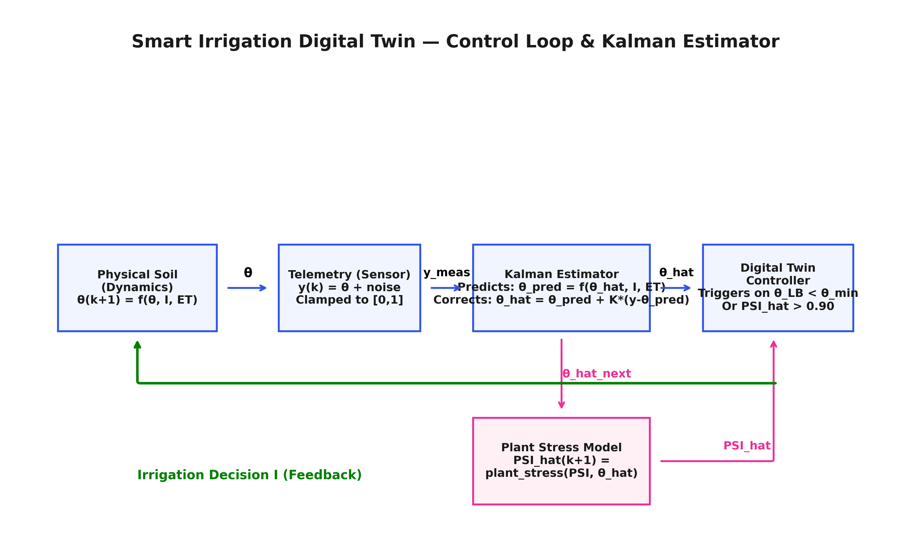
Control Loop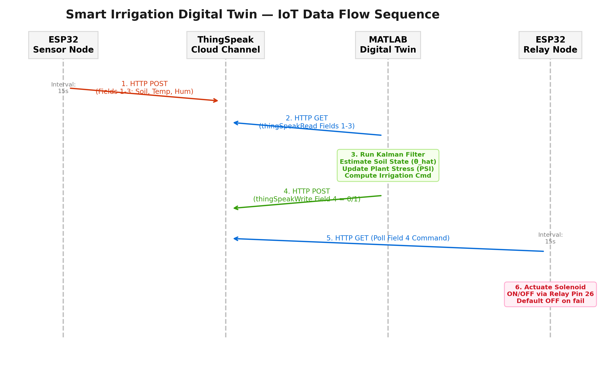
IoT Data Flow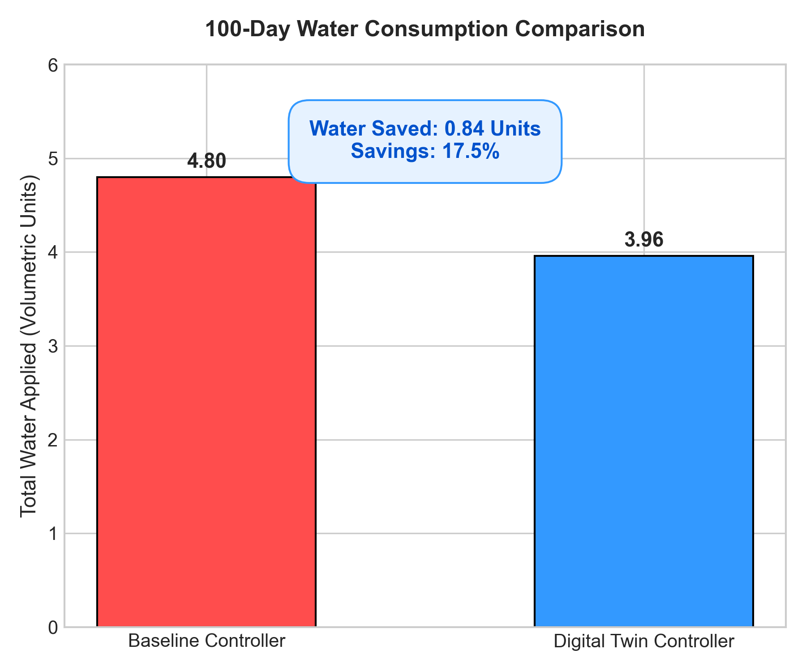
Water Consumption Comparison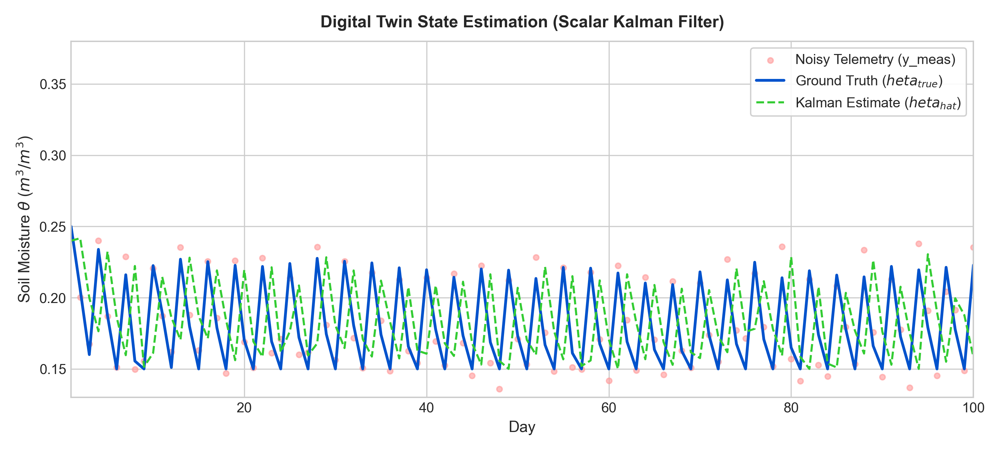
Digital Twin EstimationVoice-interactive assistant built around a plugin architecture, where each capability — system control, file management, scheduled tasks — registers as an independent, swappable module rather than hard-coded logic. A lightweight memory system persists context across sessions, and the plugin layer is designed to sit in front of LLM-backed reasoning for open-ended requests. Desktop automation handles application launching and file operations, with modularity prioritized so new capabilities plug in without touching existing ones.
Fuses PIR and ultrasonic sensing on an Arduino UNO to filter genuine intrusions from ambient noise, triggering an ESP32-CAM capture on detection. LoRa (SX1278) carries alerts across field-scale distances. PCB laid out in KiCad for reproducible builds. Sensor-fusion and alerting logic validated in simulation; hardware partially prototyped.
Problem: food-ordering platforms that let the browser dictate order totals or payment status open the door to client-side manipulation of transaction data. Architecture: a Next.js 15 App Router storefront and admin dashboard sit in front of a Supabase PostgreSQL backend — customer requests pass through server-side validation and API routes/server actions before touching the database, so order pricing and payment state are always resolved server-side, never trusted from the client. Supabase Row-Level Security and PL/pgSQL triggers enforce that boundary again at the database layer, alongside service-role operations that stay server-only. Payment flow: checkout hands off to Razorpay; the payment response is checked server-side with HMAC-SHA256 payment signature verification before any order is created or updated, so a forged client response can't fabricate a paid order. Supporting systems: React Hook Form + Zod validate every input, a Zustand-persisted cart survives page reloads, Resend sends transactional email, a Telegram bot alerts the admin on new orders, and a Serwist-powered PWA caches the storefront for installable/offline use while excluding checkout and admin routes from the cache. Verified in production: the site is live at ammus-chai-with-maska-bun.vercel.app and serving real customer orders. The Razorpay checkout/payment flow has been tested successfully in the live production environment: HMAC-SHA256 payment signature verification was confirmed on a real successful payment, and order creation after that successful payment was verified in production. The Razorpay webhook endpoint is implemented (HMAC validation, `payment.captured`/`payment.failed`/`refund.created` handling), but webhook delivery itself has not yet been tested against real webhook traffic — that verification is separate from the payment flow and is still pending. Cash-on-delivery checkout, RLS/trigger enforcement, notifications, PWA caching, and the admin dashboard are implemented and confirmed working by the project owner in production — this is a single-restaurant deployment, not a benchmarked-at-scale system.
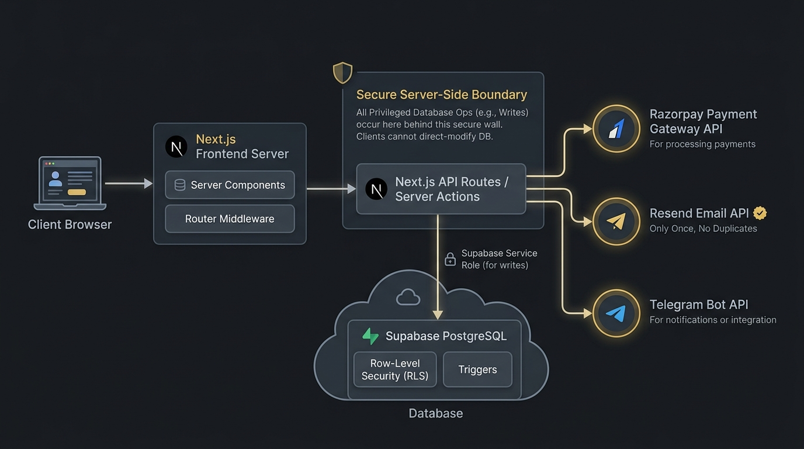
System Architecture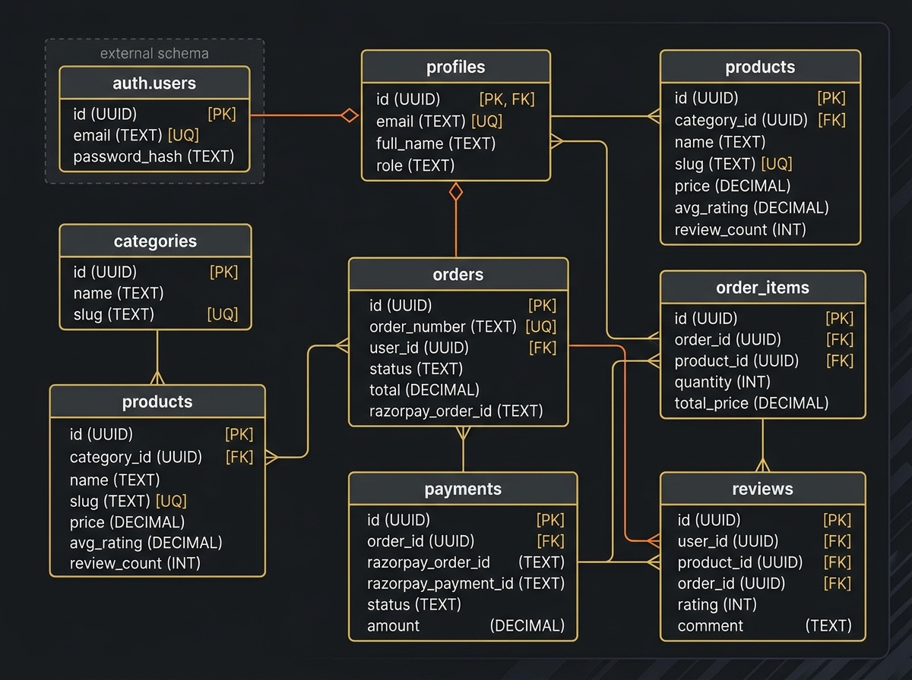
Database Schema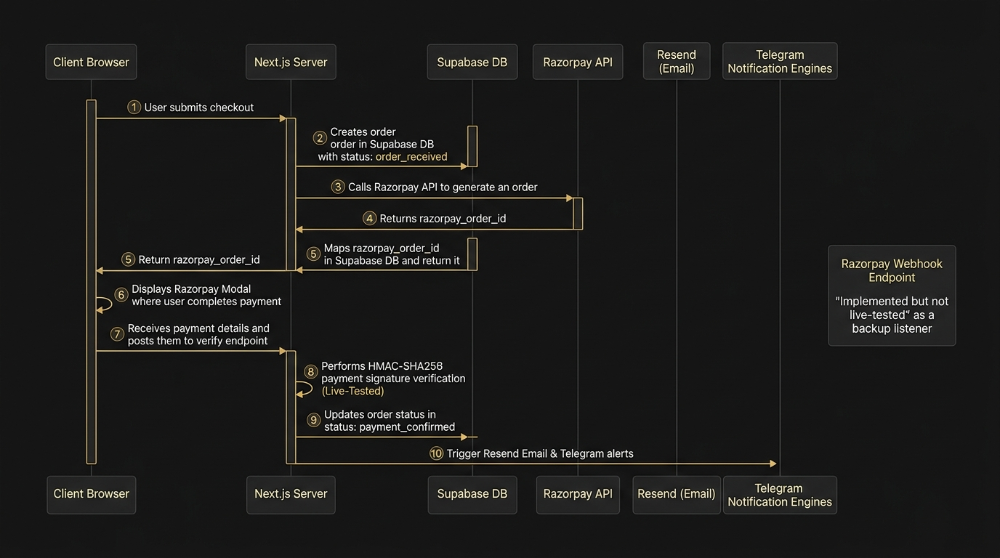
Order & Payment Flow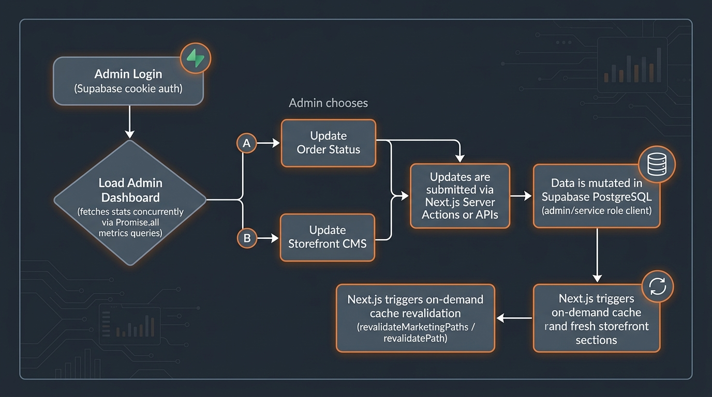
Admin Dashboard FlowContent-driven affiliate site built search-engine-first: semantic HTML, fast load times, responsive layout. Product curation and listing updates run through a lightweight automation workflow rather than manual page edits.
Verified Credentials
Professional Certifications
Independent Learning
Leadership & Involvement
Live From GitHub
Resume
Single-page, ATS-optimised resume covering education, engineering projects, skills, and experience.
Get in Touch
Interested in AI Engineering, Digital Twins, Embedded Systems, Software Engineering, or Research opportunities. Let's build something meaningful.